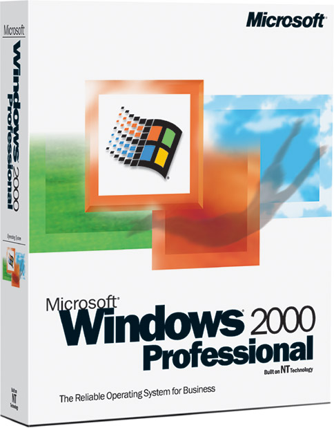

En 2000, apareció Windows 2000, nombre que reemplaza a la versión de Windows NT 5.O. Es nueva y de mucha utilidad para los administradores de sistemas, con una gran número de servicios de red y admitía dispositivos Plug&Play, que venían siendo un problema con Windows NT.
Windows 2000 estaba formado por varias versiones del sistema: una para las estaciones de trabajo y varias para servidores. Además, Windows 2000, trae consigo innovaciones tecnológicas importantes para entornos Microsoft, con respecto a nuevos servicios como también en la mejora de los existentes.

Caja de Windows 2000
Ir a...
Inicio